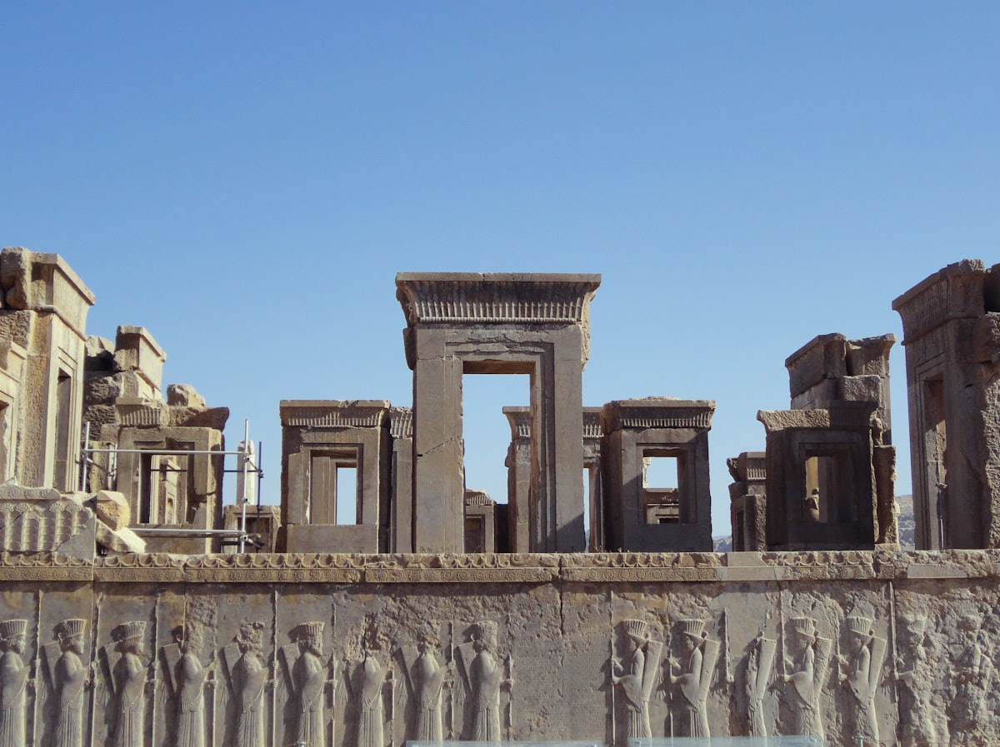
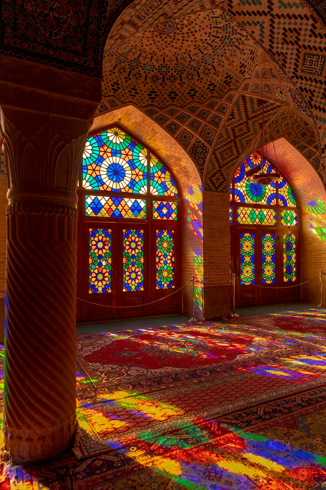
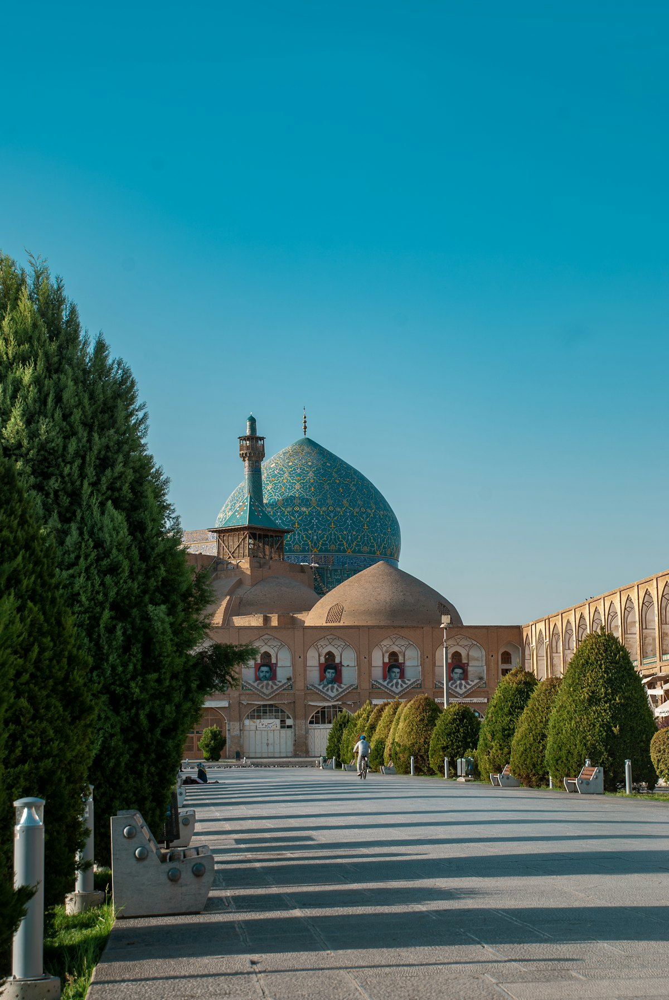
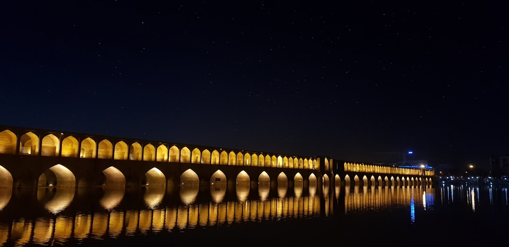
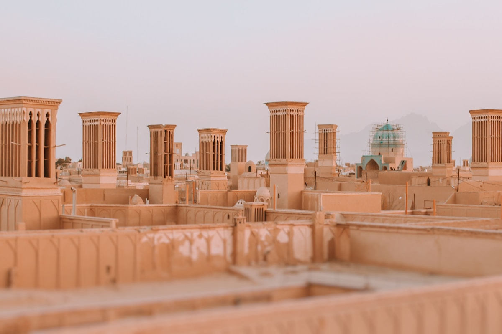
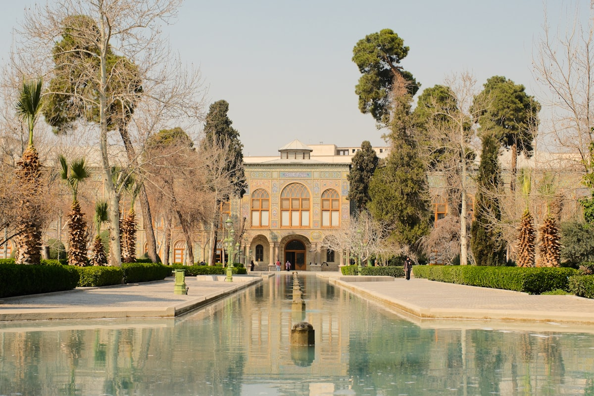
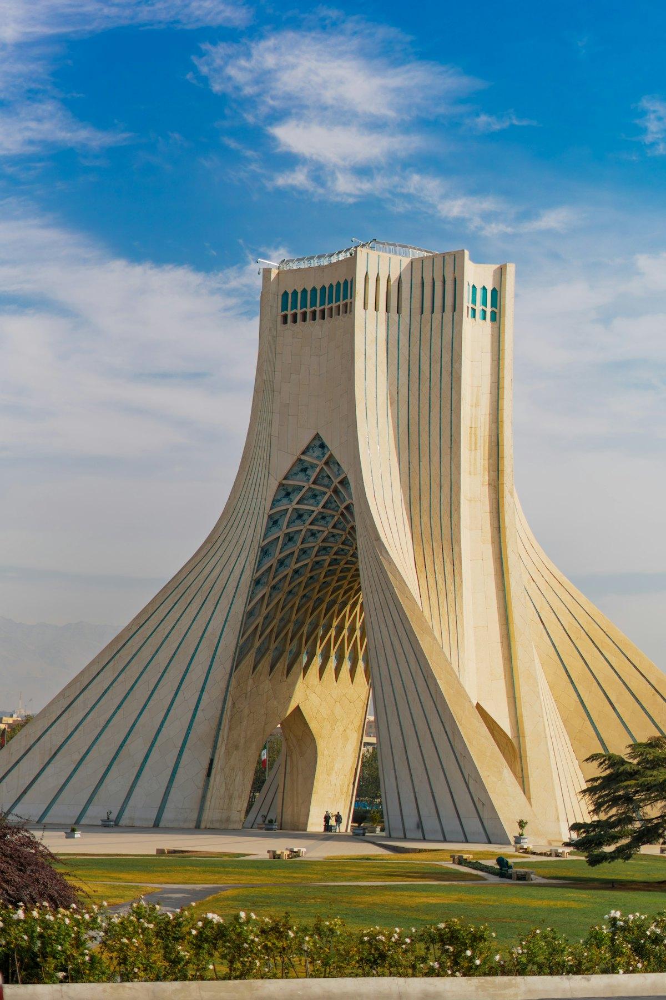
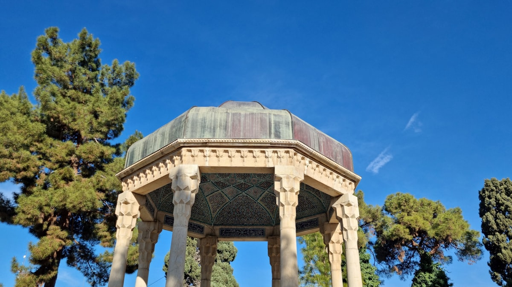

| 事项 | 结论 |
|---|---|
| 事项 | 结论 |
| 签证（最关键） | 中国护照免签入境 21 天，护照有效期须 6 个月以上；护照上有以色列签证或出入境记录将被拒绝入境 |
| 推荐方案 | 德黑兰 3 天 + 设拉子 3 天（含波斯波利斯）+ 伊斯法罕 3 天 + 亚兹德 2 天 + 返程 1 天 |
| 返程约束 | 德黑兰→北京马汉航班每周二/三/五 18:45 起飞，收官日需从亚兹德赶回德黑兰并对表 |
| 行程链 | 北京 → 德黑兰 → 设拉子 → 伊斯法罕 → 亚兹德 → 德黑兰返程 |
| 预算（人均） | 经济 8000–12000 ／ 标准 15000–22000 ／ 舒适 35000–50000（人民币） |
| 三件提前事 | ① 提前换美元/欧元现金 ② 订马汉航空直飞机票 ③ 订德黑兰→设拉子、设拉子→伊斯法罕联运 |
| 季节提醒 | 春秋（3–5 月、9–11 月）最舒适；夏季南部可达 40°C+，冬季山区寒冷；斋月出行注意餐厅作息 |
| 支付 | 伊朗禁国际银行卡，全程现金支付，带美元/欧元到当地钱庄兑换里亚尔 |
以下为 12 天 11 晚的推荐节奏：按「德黑兰→设拉子→伊斯法罕→亚兹德」逆时针推进，返程回德黑兰坐国际航班。每日主景点 ≤2 个，城际移动优先 VIP 大巴（性价比）与国内航班（省时）。
| 日期 | 行程 | 过夜地 | 主题 |
|---|---|---|---|
| D1 抵德黑兰 | 北京✈德黑兰（马汉直飞约 7.5h，夜航 00:40 起飞 04:30 到），入住补觉，午后市区初逛 | 德黑兰 | 抵达+适应 |
| D2 | 古勒斯坦宫（世界遗产）→ 伊朗国家博物馆 → 大巴扎淘藏红花与手工艺品 | 德黑兰 | 王朝与国宝 |
| D3 | 自由塔 → 原美国大使馆涂鸦墙 → 萨达巴德宫/艺术博物馆（可选） | 德黑兰 | 现当代德黑兰 |
| D4 | 德黑兰✈设拉子（约 1.5h）或夜巴，下午哈菲兹墓 + 天堂花园 | 设拉子 | 飞往诗城 |
| D5 | 清晨粉红清真寺（8 点开门抢光影）→ 摄政者清真寺/城堡 → 瓦基尔巴扎 | 设拉子 | 光影与玫瑰 |
| D6 | 波斯波利斯 + 纳克什罗斯塔姆皇陵 + 帕萨尔加德（包车一日） | 设拉子 | 波斯帝国日 |
| D7 | 设拉子→伊斯法罕（VIP 大巴约 6h 或飞机 1h），下午伊玛目广场初见 | 伊斯法罕 | 转场伊斯法罕 |
| D8 | 伊玛目广场：国王清真寺 → 谢赫洛特芙拉清真寺 → 阿里卡普宫 → 广场大巴扎 | 伊斯法罕 | 广场建筑群 |
| D9 | 亚美尼亚凡克教堂 → 哈柱桥 → 三十三孔桥夜景 | 伊斯法罕 | 多元与桥影 |
| D10 | 伊斯法罕→亚兹德（大巴约 5h），下午老城风塔漫步 + 阿米尔乔赫马克广场 | 亚兹德 | 沙漠古城 |
| D11 | 火神庙圣火 → 多莱特阿巴德花园 → 寂静塔天葬场 | 亚兹德 | 拜火教溯源 |
| D12 返程 | 上午亚兹德自由活动 → 大巴/飞机返德黑兰 → 18:45 马汉航班✈北京 | — | 收尾返程 |
以下为 12 天全程的逐小时执行时间线，可当作「当天打开照着走」的清单。标注 ※ 的可选项视体力与天气取舍。
| 时间 | 事项 |
|---|---|
| 00:40–04:30 | 北京✈德黑兰：马汉航空 W5078，空客 A340 直飞约 7.5h，落地伊玛目霍梅尼国际机场（IKA）。女性下飞机即戴头巾 |
| 05:00–07:00 | 入境+换汇：机场钱庄只换少量里亚尔应急（机场汇率差），走机场官方出租车柜台打车进市区约 50 分钟 |
| 08:00–12:00 | 入住 Valiasr 大街附近酒店（安全、地铁方便），补觉倒时差（德黑兰比北京慢 4.5h） |
| 14:00–18:00 | 午后热身：原美国大使馆外墙涂鸦（免费）+ 逛 Valiasr 大街，感受德黑兰日常 |
| 19:00 | 晚餐：波斯烤肉（Kabab）配藏红花米饭，提前订好去设拉子的机票/车票 |
| 时间 | 事项 |
|---|---|
| 08:30–12:00 | 古勒斯坦宫（世界遗产，约 ¥40–80，多座建筑单独售票）：镜厅、大理石宝座殿、风塔宫，恺加王朝奢华巅峰 |
| 12:30–14:00 | 午餐：德黑兰大巴扎附近的传统餐厅，来一锅 Dizi（炖羊肉锅配饼） |
| 14:30–17:00 | 伊朗国家博物馆（约 ¥15–25）：史前到伊斯兰时代的波斯文物，波斯波利斯浮雕真迹与楔形文字碑 |
| 17:30–20:00 | 大巴扎（免费）：藏红花、波斯地毯、手工艺铜器，砍价从 1/3 报价起 |
| 时间 | 事项 |
|---|---|
| 08:30–11:00 | 自由塔（约 ¥15–30）：45 米白色大理石地标，地下博物馆讲述伊朗从古到今 |
| 11:30–14:00 | 米拉德塔（摩天塔）观景（可选，约 ¥30–50）：俯瞰厄尔布尔士雪山下的德黑兰 |
| 14:30–17:00 | 萨达巴德宫（约 ¥20–40）或 德黑兰现代艺术博物馆（馆藏国际名作，约 ¥10–20） |
| 18:00–20:00 | 傍晚收尾：晚餐后准备次日转场，也可坐地铁 1 号线去北区 Tajrish 逛夜市 |
| 时间 | 事项 |
|---|---|
| 07:00–09:30 | 德黑兰✈设拉子（约 1.5h，提前订约 ¥300–500；穷游可选夜巴约 12h 顺带省住宿） |
| 10:30–12:00 | 入住设拉子老城民宿，初见「玫瑰与夜莺之城」 |
| 12:00–14:00 | 午餐：设拉子传统菜（橙皮炖鸡 Kalam Polo / 设拉子沙拉） |
| 14:30–17:30 | 哈菲兹墓（约 ¥10–20）：波斯最伟大诗人安息之地，玫瑰园里有人用诗集占卜 |
| 17:30–19:00 | 天堂花园（约 ¥10–20，世界遗产波斯花园）：柏树与玫瑰环绕的凉亭，夕阳下最出片 |
| 时间 | 事项 |
|---|---|
| 08:00–09:30 | 粉红清真寺（约 ¥30–60）：卡扎尔王朝彩窗，清晨阳光穿过彩色玻璃在地毯上洒出万花筒光影，务必抢第一个位置 |
| 10:00–12:00 | 摄政者清真寺（约 ¥10–20）+ 摄政者城堡（约 ¥10–20）：48 根蛇纹石柱的礼拜大厅 |
| 12:30–14:00 | 午餐：瓦基尔巴扎附近的烤鸡饭 |
| 14:30–18:00 | 瓦基尔巴扎（免费）+ 设拉子大巴扎：地毯、银器、香料，逛到傍晚 |
| 时间 | 事项 |
|---|---|
| 08:00 | 包车出发（往返约 ¥120–200/车，可拼车），去波斯波利斯约 1h 车程 |
| 09:30–13:00 | 波斯波利斯（约 ¥30–60）：阿契美尼德王朝礼仪之都，万国之门、阿帕达纳宫浮雕、大流士宫殿遗址 |
| 13:00–14:00 | 景区门口午餐（简单自助/烤饼配鹰嘴豆泥） |
| 14:30–16:30 | 纳克什罗斯塔姆（约 ¥10–20）：崖壁上的四位国王陵墓与萨珊王朝浮雕 |
| 17:00 | 返设拉子，晚上自由活动（可去哈菲兹墓旁听一场波斯音乐） |
| 时间 | 事项 |
|---|---|
| 08:00–14:00 | 设拉子→伊斯法罕：VIP 大巴约 6h（约 ¥40–60，空调舒适、男女分座）或飞机 1h（约 ¥200–400，班次少提前订） |
| 15:00–16:00 | 入住伊玛目广场附近（步行核心区） |
| 16:30–19:30 | 伊玛目广场初览（免费，世界遗产）：世界第二大广场，喝石榴汁、看波斯喷泉与茶馆 |
| 19:30 | 晚餐：广场旁传统餐厅吃「Biryani」（伊斯法罕名物碎肉米饼） |
| 时间 | 事项 |
|---|---|
| 08:30–11:00 | 国王清真寺（伊玛目清真寺，约 ¥20–40）：蓝色釉砖穹顶与马赛克拼花，正对麦加方向的弯壁 |
| 11:30–13:00 | 谢赫洛特芙拉清真寺（约 ¥20–40）：无庭院无尖塔的「少女清真寺」，穹顶乳白色在黄昏泛粉金 |
| 13:00–14:00 | 午餐：广场边烤爸爸 + 波斯酸奶 |
| 14:30–17:30 | 阿里卡普宫（约 ¥15–30）：六层宫殿与音乐厅，顶层观景台俯瞰整个广场 |
| 17:30–20:00 | 伊玛目广场大巴扎（免费）：铜器、细密画、藏红花，晚上看广场夜景 |
| 时间 | 事项 |
|---|---|
| 08:30–11:00 | 凡克教堂（约 ¥15–30）：亚美尼亚使徒教堂，墙上的圣经壁画融合波斯细密画风格 |
| 11:30–14:00 | 老城漫步 + 午餐（伊斯法罕烤鱼 / 枣泥甜品） |
| 14:30–17:00 | 哈柱桥（免费）：萨法维时代的石桥水闸与茶座，桥上吹风看扎因代河 |
| 17:30–20:00 | 三十三孔桥夜景（免费）：33 个拱门倒影，日落到亮灯是高潮 |
| 时间 | 事项 |
|---|---|
| 08:00–13:00 | 伊斯法罕→亚兹德：VIP 大巴约 5h（约 ¥40–60） |
| 14:00–15:00 | 入住亚兹德老城传统庭院旅馆（风塔 + 院落 + 坎儿井） |
| 15:30–18:30 | 老城风塔漫步（免费）：土黄色巷弄与高耸风塔，爬民宿天台俯瞰全城 |
| 18:30–20:30 | 阿米尔乔赫马克广场（免费）：对称凹拱立面，夜晚灯火通明 |
| 时间 | 事项 |
|---|---|
| 08:30–10:30 | 火神庙（约 ¥10–20）：拜火教圣火自公元 470 年燃烧至今未熄（周五闭馆） |
| 11:00–13:00 | 多莱特阿巴德花园（约 ¥15–25，世界遗产波斯花园）：伊朗最高风塔（33 米）+ 夏宫 |
| 13:00–14:30 | 午餐：亚兹德特色（羊肉汤 / 鹰嘴豆饼） |
| 15:00–17:00 | 寂静塔（约 ¥15–25）：城外荒山上的琐罗亚斯德教天葬场，登顶望沙漠 |
| 17:30 | 回老城，买伴手礼（亚兹德手工艺品 / 番红花糖），准备返程 |
| 时间 | 事项 |
|---|---|
| 08:00–10:00 | 亚兹德自由活动：老城再逛一圈 / 最后扫货伴手礼 |
| 10:30–15:00 | 亚兹德→德黑兰：大巴约 7h（约 ¥50–80）或飞伊玛目机场（约 ¥300–500，航班少需提前订） |
| 16:00–18:00 | 提前 3 小时抵达伊玛目霍梅尼机场，办理登机/退税 |
| 18:45–06:20+1 | 马汉航空 W5079 德黑兰✈北京（直飞约 7.5h），次日清晨抵京入境 |
必去（必去）/ 顺路（顺路）/ 可跳过（可跳过）。

必去
必去
必去
必去
必去
顺路
顺路图片为 Unsplash 主题图（波斯波利斯、粉红清真寺、伊玛目广场、三十三孔桥、亚兹德风塔等均为伊朗实景或同主题示意图），用于页面配图。更多免费看点：德黑兰大巴扎与原美国大使馆涂鸦墙、伊斯法罕哈柱桥、亚兹德阿米尔乔赫马克广场。
点击左侧节点可在地图上定位；点击地图 marker 会高亮对应节点。坐标为 WGS-84 转 GCJ-02 纠偏后标注。
以下为单人、不含购物的估算，人民币计价；出发地基准北京。汇率按官方参考价 1 元 ≈ 7 万里亚尔估算，但黑市价实际更高（2026 年市场价约 1 元 ≈ 18–20 万里亚尔且天天浮动）——无论按哪种汇率，都需携带美元/欧元现金到当地钱庄兑换。往返机票按马汉航空淡季 4000–5500 元计。
| 项目 | 经济（8000–12000） | 标准（15000–22000） | 舒适（35000–50000） |
|---|---|---|---|
| 往返机票 | 马汉直飞 3500–4500 | 直飞 4000–5500 | 灵活改签/商务 9000–14000 |
| 住宿（11 晚） | 青旅床位 150–250/晚 | 民宿/三星 300–600/晚 | 精品庭院酒店 1500–2800/晚 |
| 交通（境内） | 大巴+拼车 800–1200 | 飞机+火车 1800–2800 | 包车+国内航班 4500–6500 |
| 门票 | 约 300–500 | 约 700–1000 | 全含+英文向导 1500–2200 |
| 餐饮（12 天） | 街边+简餐 1500–2500 | 餐厅为主 3500–5500 | 高档波斯菜 9000–15000 |
在德黑兰与伊斯法罕之间插入卡尚 2 天：费恩花园、塔巴塔巴伊老宅、艾哈迈德苏丹浴室；亚兹德多留 1 天去梅博德冰屋与恰克恰克村。全程大巴+火车顺路衔接，预算约增加 2000–3000 元。
女性务必备好头巾与宽松长衣；带老人孩子建议德黑兰→设拉子改直飞减少折腾，波斯波利斯只走主线（砍帕萨尔加德），亚兹德老城巷道多、推婴儿车不便，可住伊玛目广场这类平坦区域。
| 方式 | 时长 | 参考价 | 备注 |
|---|---|---|---|
| 直飞（推荐） | 北京→德黑兰约 7.5h | 往返 4000–5500 元 | 马汉航空每周 3 班（周二/三/五），空客 A340，首都机场 T2，目前唯一直飞 |
| 转机 | 12–20h | 3500–4500 元 | 经伊斯坦布尔/迪拜/乌鲁木齐，需确认中转国过境签证 |
| 返程时刻 | 德黑兰 18:45 起飞 → 北京 06:20+1 | 同上 | 收官日务必对表，国际段提前 3 小时到机场 |
| 区域 | 价格/晚 | 优点 | 短板 |
|---|---|---|---|
| 德黑兰·Valiasr/北部 | 经济 150–250 / 标准 300–600 | 安全、商业发达、地铁方便 | 比南部贵，老楼多 |
| 设拉子·老城 | 经济 150–250 / 标准 300–600 | 古宅庭院民宿氛围拉满 | 巷道难找，需导航 |
| 伊斯法罕·伊玛目广场旁 | 经济 120–200 / 标准 300–500 | 步行即达广场，性价比高 | 旺季房源紧张 |
| 亚兹德·老城庭院旅馆 | 经济 120–220 / 标准 300–600 | 风塔院落+坎儿井，体验最佳 | 部分老宅无 WiFi |
| 德黑兰·机场过渡 | 标准 400–700 | 深夜到港/清晨离港方便 | 离市区远，周边冷清 |